An Influencer raised some interesting questions about the physical space that surrounds our solar system.I guess people want to know just how far away other species are from us. I think people want to know “just how far do these visitors have to travel to get to earth”.
I am sorry to say that my understanding on these things are unfortunately limited. However I can posit some curiosities that might be of interest to the reader. To this end, I would like to take the time to discuss certain things. Things that might help a searcher or two find some answers. As such, let’s talk about the numerous brown dwarfs that surround us in the vast physical space that our solar system is part of.
Yeah, you know. Those dim solar systems that are considered to be barren and devoid of life, because you know, the life the star gives off is too meager for human-like intelligence’s to evolve. You know..
Let’s get started with talking about those small and dark little Brown Dwarfs…
What is a Brown Dwarf…
A Brown Dwarf is a type of star, and it’s associated solar system. It is not a fictional character from Walt Disney. Heh heh.
Fun fact, up until just a decade or two ago, people did not believe in the possibility of brown dwarfs. The idea was “if you cannot see it, and cannot measure it, it must not exist”. So, while there were many who believed that there must logically be cooler stars that we could not see “out there”, they were often ridiculed by purists and statists who insisted that “until it is observed and measured, it cannot exist”.
Well, technology improved. NASA developed some improvements in technology and special missions were set forth to find these elusive objects… Stars that are too cool and too small to be observed from earth.
And…
Yes, they found them. They were everywhere. Not only that, but many were all around us in our own little part of physical space.
True to form, they were often tiny, small, cool and difficult to detect. We know that they are out there, though they are amazingly elusive to detect and find. The surface of some of the stars are so cool, that humans would be able to comfortably walk on the surface of the stars (given the proper conditions, of course).
In fact, astronomers had to come up with new star classifications to classify all the different types of brown dwarfs that they kept on discovering. We, of course, knew of the grand spread; O – B – A – F – G – K – M.
Of which our sun is a G-class star, and the class that we automatically assume is the home for extraterrestrial life, were it to exist. And, of which, many purists tend to suggest that it might be the only type of star to host life…
Anyways, the discoveries of the different types of brown dwarfs greatly expanded this range to include the L – T – Y classes. That’s right. Instead of finding just one type of new star, they discovered an entire world of many, many different types of stars.
The more we discovered, the more ignorant our assumptions appeared.
In fact, we had to revise our understanding of stars to begin with. For instance, what we considered as a star; the class-M, also known as a red dwarf, now became classified as a “brown dwarf”. Therefore, depending on who you are talking to, there could be either four types of drown dwarfs that include the class-M, or only three that excludes the class-M.
Talk about confusion! No wonder statists want everything in nice and neat never-changing order.
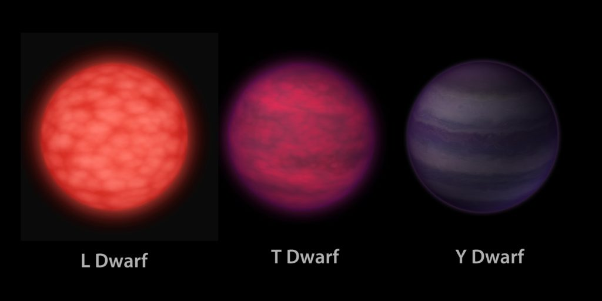
Brown Dwarfs
What we can pretty much say, at this point in time is limited. We now know, from observation, that these objects exist. We know that they possess orbiting planetary bodies, though many might be just small asteroid sized rocks, and that they would look like something completely alien to humans as we cannot see in the infrared range. We can only see light in the visible range.
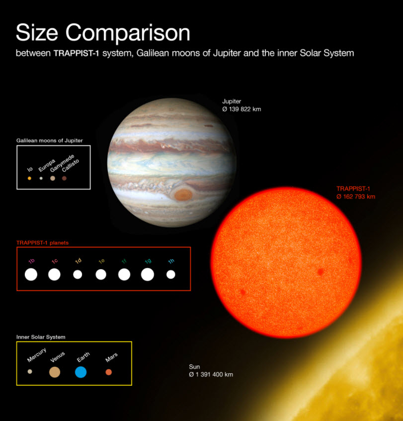
These are much cooler and dim stars and their tiny and tight systems compared to our solar system. We know that they can age. As such, they can be very old or very young.
All possess the elements for native evolved life. Just like the moons of Jupiter and Saturn can host conditions that would enable life to appear. Thus, we shouldn’t be too surprised that native life can evolve on the planets that circle these dim stars. Now, of course, the life would not resemble anything that would evolve around our star. It would be something else entirely.
Fundamentally, it would evolve some kind of eyesight that would enable it to see within the infrared range. It would need to see in this range. Else, other senses would be required to help the creatures stumble around in the bleak darkness.
The reader must remember that up until the first brown dwarf was discovered (not too long ago) there was “no proof” for the existence of these systems. As such, any work regarding them was considered frivolous. Much like mainstream treats world-line MWI today.
Around Us
Here is a short compilation of just a handful of the brown dwarfs that surround us nearby. It is not a complete list, but it should be enough to talk about some of the interesting characteristics of the space that surrounds us. For if we were to know of our environment, perhaps we would better understand our role in this universe.
"...the WISE team found that 33 brown dwarfs can be found within 26 light-years of sun." -Space.com
Now, I have to point out that none of these stars have been given proper names yet.
Instead, they have been given designations based on the technology that discovered them. Such as WISE, or 2MASS. So, please excuse the lack of exciting and exotic names. One day, they will be given proper names. Probably some “blue ribbon panel” will come up with some kind of payment scheme to name these solar systems… don’t ya think?
- Luhman 16 (A & B)
- WISE 0855-0714
- WISE 1541-2250
- UGPS 0722-05
- Ross 154 (V1216 Sgr)
- WISE 1828+2650
- Ross 248 (HH Andromedae)
- WISE 1506+7027
- WISE 1405+5534
- WISE 0350-5658
- WISE 0410+1502
- WISE 0350-5658
- Teegarden’s Star
- DEN 1048-3956
- UGPS 0722-05
- WISE J1741+2553
- WISE J0254+0223
- DENIS / DEN 0817-6155
- DENIS / DEN 0255-4700
- WISE J163940.83-684738.6
- WISE J052126.29+102528.4
- LP 944-020
- WISE J200050.19+362950.1
- DENIS 0255-4700
- 2MASS 1835+3259
- 2MASS 0415-0935
- WISE 1741+2553
- LSR J1835+3259
- WISE 0359-5405
- 2MASS 0937+2931
- WISE J2000+3629
- SIPS 1259-4336
Luhman 16 (A & B)
Let’s start with one of the closest brown dwarf systems to us. It can serve as a useful “jumping off point”, and can introduce us to what they are and how they are classified.
This system is a very dim and obscure system which has only just recently gotten any kind of attention. It consists of two stars, called “star A” and “star B”, or “Luhman A” and “Luhman B”. Luhman B orbits in a wide elliptical (as observed from earth) orbit relative to Luhman A.
Now, I am sure that the reader might be curious as to why it is named the “Luhman system”. Well, the system was named after the scientist that discovered it. That was Kevin Luhman, astronomer from Pennsylvania State University . He named the stars “A” and “B”, and others (maybe from his fan base, or more likely peers) referred to them as “Luhman A” and “Luhman B”.
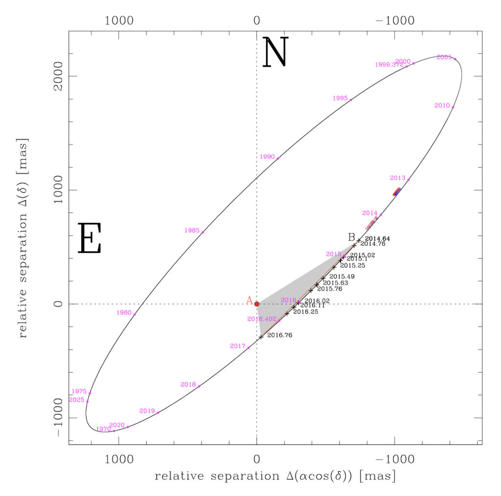
Luhman 16 (also known as WISE 1049-5319, and WISE J104915.57–531906.1) is a binary brown-dwarf system in the southern constellation Vela. (It is also a possible trinary system candidate, with yet another brown dwarf companion. Ah, but let’s hold off on that star until we get some confirmation of it’s membership.)
It lies at a distance of approximately 6.6 light-years from the Sun. Now, that is pretty close. Our nearest neighbor is the Alpha Centauri solar system which is just a little over 4 light-years away.
The pair is the (known) closest brown-dwarf system to the Earth.
Luhman 16 A is about 32 times Jupiter’s mass, and Luhman 16 B about 27. That means both are far less massive than the Sun (combined they equal 0.056 the Sun’s mass), which is consistent with them being brown dwarfs.
Both stars are very cool and they do have solar systems, though whether there are any habitable planets around either star is unknown and speculative. Personally, I believe that there wouldn’t be any earth-compatible habitable planets simply due to the lack of sufficient illumination from the brown dwarf suns. Any native life would be such that would survive on internal planetary heat or has biologically adapted to a low (visible) light environment.
Such as which is found deep under the seas or inside caves below the ground. The ability to see is not a prerequisite for intelligent life. It is only our degree of comfort with native Earth life that gives us this impression.
Since these stars are all rather stable, the possibly of native life and biological incubation planets cannot be precluded.
Luhman 16A (WISE 1049-5319)
Let’s start by looking at the first of these two stars. Let’s look at the Luhman 16A star.
Luhman 16A (WISE 1049-5319) is a class L8 brown dwarf. As stated previously, brown dwarfs have been classified as falling within one of three sub-categories. These include the L – T – Y classes. As such Luhman 16A is a class L8 brown dwarf.
L dwarfs are characterized spectroscopically in the far red by weak or absent bands of TiO and VO, strong bands of FeH and CrH, and strong lines of neutral Na, K, Cs, Rb, and sometimes Li. In the near-infrared they show strong bands of H2O along with bands of FeH and CO and lines of neutral Na and K. The L dwarf sequence spans the temperature range from ~1300 to ~2000 °K.
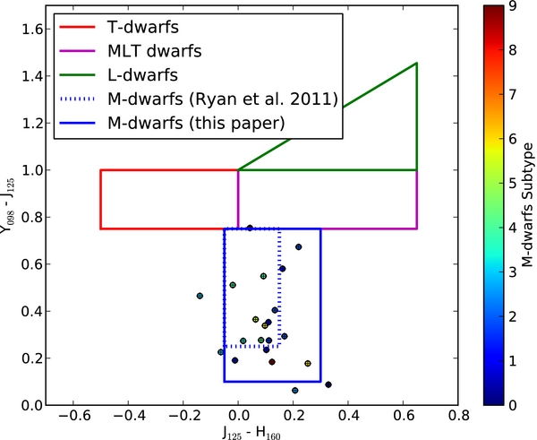
Brown dwarfs form independently, just like “regular” stars do, but they lack sufficient mass to “ignite” as stars do. Thus, these stars do not radiate light as brightly as stars like our sun do. Instead they radiate very low levels of light and radiation. As such, they might appear to us like a bigger and hotter version of the planet Jupiter, but would be slightly brighter and appear magenta in color to our human eyes; a “Hot Jupiter” perhaps.
Could brown dwarfs be considered to be like a "Hot Jupiter"? Now, "Hot Jupiter's" are a brand new "animal" that we are just trying to figure out. It seems that they might be spawned from other solar systems, and move about, eventually entering orbits with other solar systems or meeting up with other "Hot Jupiter's" to form their own unique solar system.
Maybe this is how the Luhman solar system was formed…
Based on a sample of our one and only solar system, astronomers once expected most planetary systems to have small, rocky planets (like Earth) orbiting close to their host star, and massive, Jupiter-like planets orbiting farther out. However, with the discovery of the first exoplanets, this simple model was shattered. Those planets, the Hot Jupiter's, were different from anything we had ever expected. Comparable in mass to Jupiter, they move on incredibly short period orbits, almost skimming the surfaces of their host star. Instead of Jupiter's sedate 12-year orbit, they whizz around with periods of days, or even hours. Finding planets on such extreme orbits meant a major rethink. As a result, a new suite of theories were born. Rather than planets forming sedately at a fixed distance from a star, we now picture migratory planets, drifting huge distances as they grow. Rather than moving in the same plane as their host star's equator, some Hot Jupiter's turned out to have highly tilted orbits. Some even move on retrograde orbits, in the opposite direction to their star's rotation. To understand these observations, astronomers have developed new models, featuring evolution that allows migrating planets to become misaligned. The most promising share a common theme, a period of high eccentricity migration. High eccentricity migration models run as follows. Giant planets form, as expected, on initially circular orbits, well aligned with their host's equator. As the systems evolve, the planet's orbit is perturbed by other massive objects in the same system (most likely, a companion star). As a result, the planet's orbit becomes significantly less circular (more eccentric). At the same time, its inclination can be pumped up, becoming misaligned. If a planet's orbit is sufficiently tilted, compared to that of its perturber, an additional effect can kick in, known as the Kozai-Lidov mechanism. Under the Kozai-Lidov mechanism, a planet's orbit can yaw wildly in space. As its orbit becomes more inclined (compared to the perturber), it also becomes more circular. Then the oscillation changes direction, and the orbit swings back towards that of the perturber, while becoming more eccentric. The causes for the perturber, or what it actually is, is unknown at this time.
Anyways, just what does a “Hot Jupiter” or a “Brown Dwarf” look like?
We actually do not know what they would look like as we have never seen one close up. So at this stage, everything is speculation. My best guess is that if the reader could somehow photo-shop a red dwarf with sunspots onto an image of Jupiter or Saturn, the resulting image, if filtered properly might be something similar to what a brown dwarf could look like. It would be very dim, but would have some limited kinds of banding, spots and areas of storm activity and “sun spot” like features on the surface. (Which could be various phenomena related to storms or clouds given the varying composition of the star.)
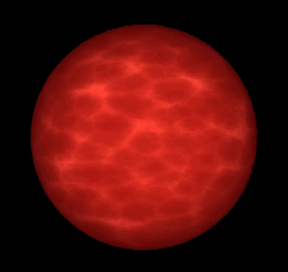
As depicted the artist assumes that there would be no physically observed eddies and currents of stellar material on the surface of the star. But this is not accurate. While the stars would have a ruddy and splotchy surface, they would also have a kind of banded surface with regions of large “sun spots” and twirls and eddies reminiscent of the “great spot” on the planet Jupiter.
The degree to which these features would appear would depend on the star, it’s size and history. My opinion is that the appearance of a brown dwarf greatly varies from star to star.
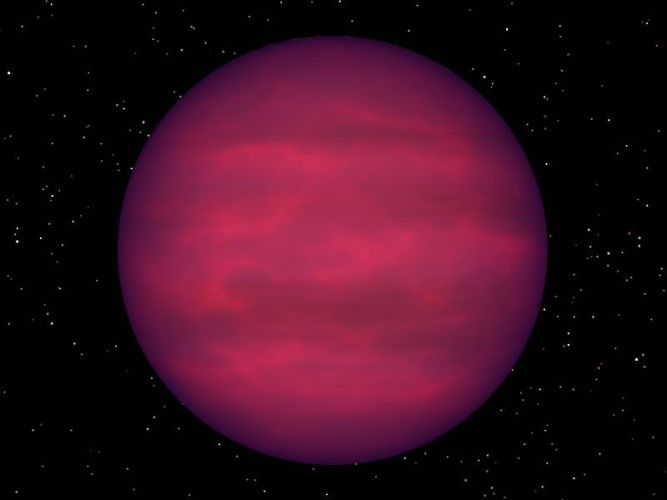
The companion to Luhman 16A is Luhman 16B which is a class T1 brown dwarf. As such it would also be enormously dim and very difficult to see with human eyes. This is an artistic rendition of such a star, however my contention remains that it might also contain surface imperfections, swirls and eddies reminiscent of banded gas giants and sun spot plagued stars.
However, what it would actually look like would depend on the eyesight of the race observing it.
Spectral class L
Talking about red dwarfs, the defining characteristic of spectral class M, the long standing coolest star type, is an optical spectrum dominated by absorption bands of titanium(II) oxide (TiO) and vanadium(II) oxide (VO) molecules.
This was confusing. Other brown dwarfs did not have this light signature. For instance, GD 165B, the cool companion to the white dwarf GD 165, had none of the hallmark TiO features of M dwarfs.
Now, this really confused many scientists. The subsequent identification of many objects like GD 165B ultimately led to the definition of a new spectral class, the L dwarfs, defined in the red optical region of the spectrum not by absorption metal-oxide bands (TiO, VO), but metal hydride emission bands (FeH, CrH, MgH, CaH) and prominent alkali metal lines (Na I, K I, Cs I, Rb I).
So,the L-class was was derived.
Fundamentally, L class brown dwarfs have a different visual appearance than M class stars and T class dwarfs. (This is due to the metal hydride emission bands, and alkali metal lines.) Flares, eddies and sunspots emit these kinds of visual wave lengths that create a different visual appearing object in the sky.
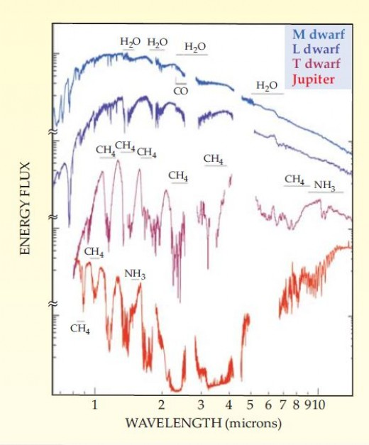
Anyways, so much for how the Luhman 16A. Let’s talk about the other star, Luhman 16B.
Luhman 16B (WISE J104915.57–531906.1)
Luhman 16B (WISE J104915.57–531906.1) is a class T1 brown dwarf. Luhman 16B possesses uneven surface illumination during its rotation. It has large and splotchy areas of illumination which might be indicative of planetary collisions and planetary absorption in the past.
T dwarfs are characterized by methane absorption notably at H- and K-bands and show strong H2O bands throughout the far red and near-infrared regions. The known examples also show neutral K and Cs lines along with weak or absent bands of FeH and CO.T dwarfs fall at temperatures below ~1300 °K.
Alternatively it might be indicative of enormous regions of “sun spots” or other surface “imperfections” relative the primary surface composition of the stellar object. Its companion, Luhman 16A does not have these apparent features.
The reader should recognize that brawn dwarfs have a great deal of variety in outside and exterior appearance compared to their hotter stellar neighbors.
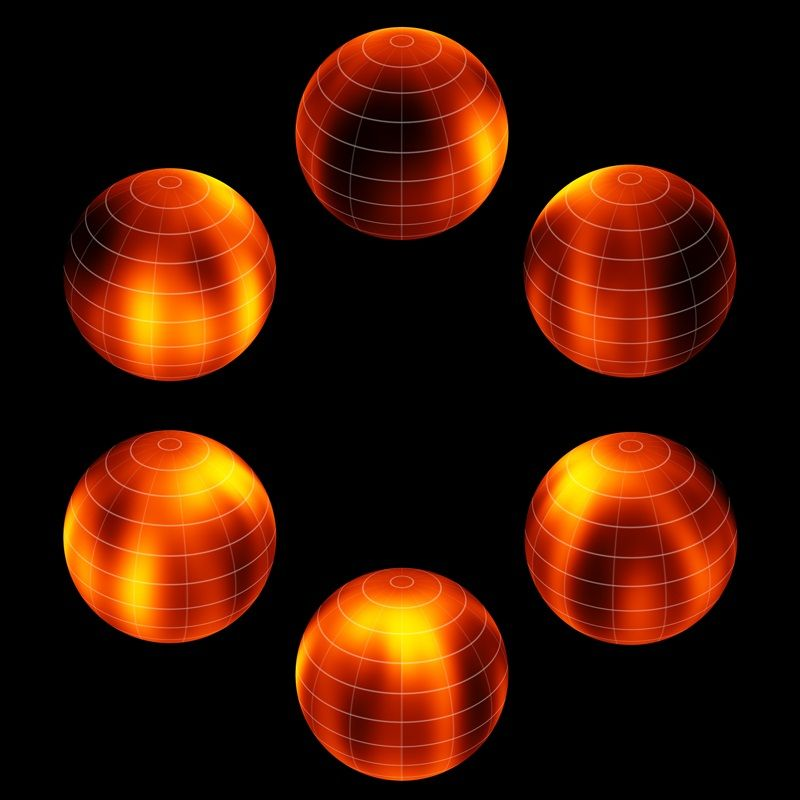
They might be a solid color showing features like “sunspots” or “storms like the big red spot on Jupiter. Or they might have evident clouds on their surface. Scientists don’t really know, and neither do I. This star is known to have a splotchy and irregular surface illumination. This might be due to sun spots or other kinds of stellar atmospheric phenomena that we do not know of yet.
Here’s a fun website that discusses the cloud cover, scientific studies, and even provides a 3D color cut out model of the star! Go here; or go here for the fold and cut model.
Well, since the nearest solar system to us is composed of two class-T brown dwarfs, let’s spend some time talking about these stars in general.
Class T Brown Dwarfs
Again, Luhman 16B (WISE J104915.57–531906.1) is a class T1 brown dwarf. This is a different “animal” from the Luhman 16A. Remember, Luhman 16A (WISE 1049-5319) is a class L8 brown dwarf.
Whereas near-infrared (NIR) spectra of L dwarfs show strong absorption bands of water (H2O) and carbon monoxide (CO), the NIR spectrum of class-T dwarfs are dominated by absorption bands from methane (CH4). Methane. Not water, and carbon monoxide. These are features that were only found in the giant planets of the Solar System and Titan.
CH4, H2O, and molecular hydrogen (H2) collision-induced absorption (CIA) give T-class brown dwarfs a bluish appearance. These are deep blue, blue near-infrared colors. Their steeply sloped red optical spectrum also lacks the FeH and CrH bands that characterize L dwarfs and instead is influenced by exceptionally broad absorption features from the alkali metals Na and K. These differences led scientists to propose the T spectral class for objects exhibiting H- and K-band CH4 absorption.
As of 2013, 355 T dwarfs are known.
Theory suggests that L dwarfs are a mixture of very-low-mass stars and sub-stellar objects (brown dwarfs), whereas the T dwarf class is composed entirely of brown dwarfs. Because of the absorption of sodium and potassium in the green part of the spectrum of T dwarfs, the actual appearance of T dwarfs to human visual perception is estimated to be not brown, but the color of magenta coal tar dye. T-class brown dwarfs, such as WISE 0316+4307, have been detected over 100 light-years from the Sun.
Clouds on Luhman 16B
On January 29, 2014, a team of astronomers using the European Southern Observatory’s Very Large Telescope (VLT) announced that they had imaged weather patterns produced by very hot clouds on Luhman 16 b. This was an amazing discovery. Amazingly they were not able to find this kind of behavior on Luhman A. To which, they concluded, it has apparently a “featureless atmosphere” in the wavelengths observed. Among other weather, the brown dwarf may have been experiencing rains of silicate rock and molten iron, otherwise kept aloft by “vigorous atmospheric motions”. Wow!
Mercator projection of Luhman 16B
Here is a Mercator projection of Luhman 16B. Not too shabby. This was compiled by I. Crossfield, MPIA.
Luhman 16C (Unconfirmed)
On December 4, 2013, a team of astronomers revealed that astrometric measurements indicate that the Luhman 16 A & B system has another major unseen companion. This object has been sensed orbiting one of the two brown dwarf components of the binary system. If the unseen companion is a planet of 10 Jupiter-masses, then it has an orbital period between two months and one year. The team also claimed to have obtained a more precise parallax of 6.6 +/-0.1 light-years (2.020+/-0.019 pc) from our Sun, Sol.
Planets around Brown Dwarfs
Disks around brown dwarfs have been found to have many of the same features as disks around stars. Therefore, it is to be expected that there will be accretion-formed planets around brown dwarfs.Why not? Right?
Given the small mass of brown dwarf disks, most planets will be terrestrial planets rather than gas giants. If a giant planet orbits a brown dwarf across our line of sight, then, because they have approximately the same diameter, this would give a large signal for detection by transit. The accretion zone for planets around a brown dwarf is very close to the brown dwarf itself, so tidal forces would have a strong effect.
The contemporaneous belief is that planets that orbit around brown dwarfs are likely to be carbon planets depleted of water. Though, I would hazard a guess that we would actually be surprised in the great diversity of the planets that surround these brown dwarfs. I would expect to find frozen balls of ice with underground seas like Europa, to planets very similar to (a dark) earth and everything in between.
Life
It is unlikely that there are habitable (by humans) planets around either of these stars. The habitable region lies too close to the star and the stars give off too little light. But that does not preclude that possibility that [1] other life has occurred naturally or has [2] been transplanted there by other star faring races. Any life in this system would have to had evolved in such a way as to fill the particular harsh conditions in the system.
It would presumably exclude most forms of “advanced” bipedal humanoid life, but… but, the existence of other forms of “exotic” life; naturally evolved should not be ignored.
Of course, it is quite possible that there are or were an extraterrestrial presence in this system. Any extraterrestrials in this system would be here for reasons that would not be overly apparent (or appreciated) by us humans. Please understand and take note. This solar system is rather quiet and quiescent. As such, it seems to fulfill the primary concerns relative to most local space-faring extraterrestrial species.
As do MOST brown dwarfs…
Visible Movement of the Luhman 16 solar system
NASA has actually filmed the movement of these two brown dwarfs as they dance about the sky. They have made a You-tube video of this event, and it is pretty curious to watch. You can read about it here.
Fun
The reader can enjoy various GIF’s, animations and movies of the stars in this system. These can be viewed HERE.
“Previous observations suggested that brown dwarfs might have mottled surfaces, but now we can actually map them. Soon, we will be able to watch cloud patterns form, evolve, and dissipate on this brown dwarf — eventually, exometeorologists may be able to predict whether a visitor to Luhman 16B could expect clear or cloudy skies.” - Ian Crossfield (Max Planck Institute for Astronomy, Heidelberg, Germany)
Various people have created 3D models of one or more of the stars in this system. Others, have even made “cut outs” for the reader to enjoy. If that great PDF is no longer available, the reader can go here. Still having trouble? Then use this image below;
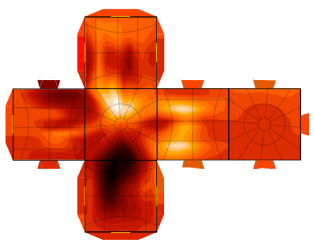
Thoughts on the Luhman System
A study of the Luhman 16 solar system tells us quite a bit about the surrounding physical space.
Surrounding us are all kinds of barely recognizable “oasis’s” in the vast gulfs of emptiness. We are typically unaware of these places because we have a difficult time seeing them, and identifying them. They do not look like anything that we would consider to be nice like our solar system. They look different… hostile… alien.
We should not discount their importance simply because they are odd, strange or unrecognizable to us.
To a species that can see in the infrared, these systems would be well illuminated. They would host species that would be similar and familiar. The nature of the star(s) would suggest long term stability and long life. Fluctuation and influences due to stellar environments, would be similar to that which we experience. However mitigated by the planetary atmosphere and the surrounding environments…
We might as well consider that these quieter, dimmer, and longer lived solar systems are precisely the ideal location(s) for species cultivation.
Let’s take some time to study some of the other stellar objects and solar systems that surround us. There are many. They are everywhere, and we haven’t even touched the “tip of the iceberg”. The reader might be surprised to know that there are many nearby mysteries that we have no idea or concept of…
WISE J085510.83-071442.5.
On April 25, 2014, astronomer Kevin L. Luhman announced the discovery of yet another extremely dim brown dwarf around 7.2 +0.8/-0.7 light-years (2.20+0.24/-0.20 pc) from our Sun, Sol. Pictures obtained from multiple telescopes have verified that the objects distance is a mere 7.2 light-years away, earning the title as the fourth system closest to our sun. That’s pretty close.
Remember, Luhman 16AB is 6.6 light-years away.
He found this star by using infrared images collected by NASA’s Wide-field Infrared Survey Explorer (WISE). It was designated WISE J085510.83-071442.5 (but can be shortened to WISE 0855-0714). As of 2015, this sub-stellar object is the fourth closest to the Solar System.
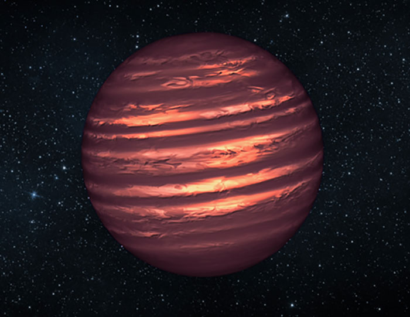
NASA’s Hubble and Spitzer space telescopes observed the object to learn more about its turbulent atmosphere. Brown dwarfs are more massive and hotter than planets but lack the mass required to become sizzling stars. Their atmospheres can be similar to the giant planet Jupiter’s.
Spitzer and Hubble simultaneously observed the object as it rotated every 1.4 hours. The results suggest wind-driven, planet-size clouds. Credit NASA/JPL-Caltech. Source found here.
Temperature
It has an estimated temperature that lies somewhere between minus 54 and 9 degrees Fahrenheit (minus 48 to minus 13 degrees Celsius). As such, the object is the coldest brown dwarf discovered (As of April 25, 2014.), as all the previous coldest dwarfs were no colder than room temperature. This star is so cold that it can have ice and snow on it’s surface. It is also the reddest as well as coldest brown dwarf known, it should probably be classified as a “Y” dwarf.
Individually, this star and its associated solar system appears to be the coolest “brown dwarf” ever known. The body of this dim star is as surprisingly cold as the North Pole. Brown dwarfs start their lives as stars in collapsing balls of gas, but do not have the mass to burn fuel Nuclear and radiating the light of the stars.
We were able to determine its temperature by measuring how much light it gave off in different colors; hotter objects are bluer, and colder ones red. This object is so cold it’s incredibly faint even in the near infrared; scientists had to look at even longer wavelengths to get a temperature. It was even invisible to the massive Gemini telescope in Hawaii! Never the less, we were able to spot it using the Spitzer Space Telescope, though, and was able to nail down its temperature. And this is the part that kills me: the best fit temperature that was found was around 225–260 Kelvins. Even at the high end, that’s -13° C (9° F). That’s literally colder than ice (or at least the freezing point of water). That’s barely warmer than the temperature of the freezer in my kitchen.
Previous discoveries of cool brown dwarfs, always found by WISE and Spitzer, were found to have a temperature. WISE J085510.83-071442.5 is estimated to be very small and tiny, and only about 3 to 10 times the mass of Jupiter.
The reader should pay close attention to this information. This “star” is so cold that a human can walk on it’s surface. The ground would feel warm to the touch. It would have an atmosphere, but it would probably be quite poisonous. This star is so small, being only 3 to ten times the mass of Jupiter that the gravity on the surface would be terribly crushing, but the combination of planetary attributes and stellar attributes might very well herald a new kind of possible planetary environment; one that is part star and part planet.
Age
That temperature is incredible. It implies this object is very old, too, because it would’ve been a few thousands degrees when it formed, and would take at least a billion years to cool down to its current chilly temperature. It’s hard to determine how old it actually is, but it’s most likely over 10 billion years old.
Apparently it was birthed in the first few billion years since the “big bang”.
Infrared Spectrum
A team led by astronomers at UC Santa Cruz has succeeded in obtaining an infrared spectrum of WISE 0855 using the Gemini North telescope in Hawaii. This observation was successful in providing the first details of the object’s composition and chemistry. Among the findings is very strong evidence for the existence of clouds of water or water ice, the first such clouds detected outside of our solar system.
Skemer is first author of a paper on the findings to be published in Astrophysical Journal Letters and currently available online.
“We would expect an object that cold to have water clouds, and this is the best evidence that it does,” -Andrew Skemer, assistant professor of astronomy and astrophysics at UC Santa Cruz.
He continues,
“WISE 0855 is our first opportunity to study an extrasolar planetary-mass object that is nearly as cold as our own gas giants. It's five times fainter than any other object detected with ground-based spectroscopy at this wavelength. Now that we have a spectrum, we can really start thinking about what's going on in this object. Our spectrum shows that WISE 0855 is dominated by water vapor and clouds, with an overall appearance that is strikingly similar to Jupiter." - Andrew Skemer, assistant professor of astronomy and astrophysics at UC Santa Cruz.
A brown dwarf is essentially a failed star, having formed the way stars do through the gravitational collapse of a cloud of gas and dust, but without gaining enough mass to spark the nuclear fusion reactions that make stars shine. With about five times the mass of Jupiter, WISE 0855 resembles that gas giant planet in many respects. Its temperature is about 250 degrees Kelvin, or minus 10 degrees Fahrenheit, making it nearly as cold as Jupiter, which is 130 degrees Kelvin.
The researchers developed atmospheric models of the equilibrium chemistry for a brown dwarf at 250 degrees Kelvin. Then they calculated the resulting spectra under different assumptions. Some of which including cloudy and cloud-free models. The models predicted a spectrum dominated by features resulting from water vapor, and the cloudy model yielded the best fit to the features in the spectrum of WISE 0855.
Comparing the brown dwarf to Jupiter, the team found that their spectra are strikingly similar with respect to water absorption features.
One significant difference is the abundance of phosphine in Jupiter’s atmosphere. Phosphine forms in the hot interior of the planet and reacts to form other compounds in the cooler outer atmosphere, so its appearance in the spectrum is evidence of turbulent mixing in Jupiter’s atmosphere.
Therefore, the absence of a strong phosphine signal in the spectrum of WISE 0855 implies that it has a less turbulent atmosphere.
"The spectrum allows us to investigate dynamical and chemical properties that have long been studied in Jupiter's atmosphere, but this time on an extrasolar world," -Andrew Skemer.
Size
It has a very low mass, too, probably between 3 and 10 times the mass of Jupiter. That’s pretty lightweight even for a brown dwarf. And here’s another amazing thing about it: It might be a planet. What I mean is, it may have formed around a star like a planet does, then got ejected by gravitational interactions with other planets. If so, it was kicked out of its solar system, doomed to wander the galaxy on its own as a rogue planet. We know such objects exist, and there must be many billions of them in deep, cold space.
Some people might argue that because brown dwarfs can’t sustain fusion in their stars they aren’t really stars. As usual, when you get near the borders of definitions things get fuzzy, and definitions become less than useful. Some people think brown dwarfs are more like planets, and other think they’re more like stars. I think it’s best not to let ourselves get boxed in with arbitrary definitions, and to just let brown dwarfs be brown dwarfs. I generally call them “objects” when I'm trying to be generic, but it's not awful or terribly incorrect to call them stars as long as you keep that in mind.
Common
There is the very strong possibility that our galaxy is just teeming with super cool brown dwarfs like this. We just do not have the resources or capability to sense them at this time. It is my personal belief that this is the case, and over the next fifty years that we will, as humans, discover so many floating and orbiting around our solar system. Many of which are very old, and all of which possess various rocky bodies in orbit around them.
WISE 1541-2250
Ah, yes, let’s look at another of these strange objects at lie near to our solar system…
“The Y dwarfs are in our sun's neighborhood, from approximately nine to 40 light-years away. The Y dwarf approximately nine light-years away, WISE 1541-2250, may become the seventh closest star system, bumping Ross 154 back to eighth. By comparison, the star closest to our solar system, Proxima Centauri, is about four light-years away.” - Stars as Cool as the Human Body
WISE 1541-2250 (full designation WISEPA J154151.66−225025.2). It has a luminosity classification of Y0.5, and it lies located in the constellation Libra at approximately 18.6 light-years from Earth. It is very dim, and is almost invisible to the naked eye of humans, were they to be orbiting inside the solar system. Only those species that possess the biological optical cones that would enable them to see in infrared would be able to make out this star.
With the other three brown dwarfs that we talked about so far, we discussed the class-L and the class-T brown dwarfs. Here, we have another new ‘animal”. This is a class-Y brown dwarf.
It is very dim, and very cool and very small.
While it is certainly larger than our planet Jupiter; it is far smaller than any kind of star that we would classify as significant. It probably has orbiting planets and planetoids and moons that circle it.
Class Y Brown Dwarfs
As the scientists discovered more and more brown dwarfs, they needed to expand their ideas of classifying them. There were so many, and they all had different characteristics. Then, in April 2010, two newly discovered ultra-cool sub-brown dwarfs (UGPS 0722-05 and SDWFS 1433+35) were proposed as prototypes for spectral class Y0.
In February 2011, Luhman reported the discovery of a ~300 K, 7-Jupiter-mass ‘brown-dwarf’ companion to a nearby white dwarf. Though of ‘planetary’ mass, other scientists suggest it is unlikely to have formed in the same manner as planets.
Shortly after that, another scientist, Mr. Liu, published an account of a “very cold” (~370 K) brown dwarf orbiting another very-low-mass brown dwarf and noted that…
"Given its low luminosity, atypical colors and cold temperature, CFBDS J1458+10B is a promising candidate for the hypothesized Y spectral class."
In August 2011, scientists using data from NASA’s Wide-field Infrared Survey Explorer (WISE) discovered six “Y dwarfs”—star-like bodies with temperatures as cool as the human body.
WISE 0458+6434 is the first ultra-cool brown dwarf discovered by WISE. WISE data has revealed hundreds of new brown dwarfs. Of these, fourteen are classified as cool Ys.
One of the Y dwarfs, called WISE 1828+2650, was, as of August 2011, the record holder for the coldest brown dwarf – emitting no visible light at all, this type of object resembles free-floating planets more than stars.
WISE 1828+2650 was initially estimated to have an atmospheric temperature cooler than 300 K[46]—for comparison the upper end of room temperature is 298 K (25 °C, 80 °F). Its temperature has since been revised and newer estimates put it in the range of 250 to 400 K (−23–127 °C, −10–260 °F).
These ultra-cold stars… stars the temperature of planets that give off no visible light… have been classified as class-Y Brown Dwarfs.
Planet Habitability & Duration
Is there time, then, for life to form on a planet that would orbit such a cold, cold star?
Andreeshchev and Scalo note that a brown dwarf planet (a planet that orbits a Brown Dwarf) will be within the tidal lock radius zone of the star. What this means is that the planet will always present one side to its star even when the brown dwarf is young. It seems rather discouraging, doesn’t it?
However, we do have some studies showing that atmospheres can remain viable in such settings, so this may not rule out life. Are are two GIFS that represent studies of close proximity planets to the red dwarf in the Alpha Centauri solar system.
A bigger question is just how long the habitable zone will remain habitable and how, life might adapt. Clearly, evolutionary time-scales on a brown dwarf planet could be much different from those on Earth, but the paper notes that a habitability duration of less than 0.1 billion years would present real issues about the viability of complex life.
Andreeshchev and Scalo’s diagram (partially reproduced below), studies the duration of residence in the evolving habitable zone as a function of the planet’s distance from the brown dwarf, assuming a circular orbit.
They find that much depends on how we set limits on the habitable zone.
However, in general habitability duration’s of a billion years are possible for planets within 2-3 Roche radii for brown dwarfs above 0.03 solar masses. Keep in mind that the Roche limit defines how close a planet can be to its host star before being torn apart by tidal forces.
A habitable zone duration of up to 4 billion years is possible only close to the Roche limit, but could theoretically occur for brown dwarfs as small as 0.04 solar masses.
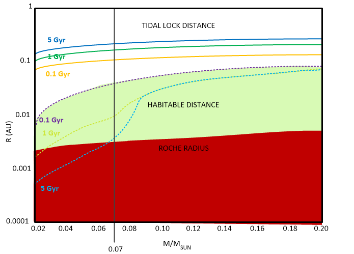
In fact, if you push these numbers to their upper limits, you can work out a habitable zone that has a duration of up to 10 billion years for a brown dwarf with a mass of 0.07 solar masses, as long as you’re willing to skirt the Roche limit about as close as possible.
The authors are working, by the way, with a habitable zone definition that involves liquid water at the surface. This is, of course, the classic formulation of habitable zone rather than more recent extensions of the idea.
Habitability of Brown Dwarf Planets
A paper by Andreeshchev and Scalo, “Habitability of Brown Dwarf Planets,” Bioastronomy 2002: Life Among the Stars. IAU Symposium, Vol. 213, 2004 is a short but fascinating paper, and here’s something that catches the eye:
“…if development of intelligence is partially driven by cooling episodes, as suggested by Schwartzman & Middendorf (2000), then on BD planets cognitive evolution may be expected to contain a stronger continuous component than on Earth.”
I leave it to the science fiction writers to come up with depictions of the societies that may result. Let’s just ponder that thought that if we do decide brown dwarf planets are not uncommon, which is a pretty realistic assumption, then it could possibly be likely that nearby dark space is populated with all kinds of life. For after all, we have learned that complex life may find ways of evolving on such worlds. Thus, our nearby space may be littered with astrobiologically interesting destinations that are largely unknown to us.
WISE 1828+2650
Consider Wise 1828+2650, a nice class-Y brown dwarf.
On August 24, 2011, astronomers using data from the Wide-field Infrared Survey Explorer (WISE), an infrared space telescope, announced that they found 100 new brown dwarf stars. The list of newly discovered stars included six very cool, Y-class brown dwarfs all within 40 light-years of our Sun, Sol. One of which was WISE 1828+2650.
This star is quite interesting.
It turns out that Y-dwarfs are the coldest members of the brown dwarf family. They are objects with too little mass to fuse atoms at their cores. As a result, they are unable to ignite into the burning kinds of stars that we see at night. (This is because they are unable to fuse elements like hydrogen and helium.) Instead, brown dwarf cool and fade with time until they radiate light only at infrared wavelengths. While the atmospheres of brown dwarfs are similar to those of gas giant planets like Jupiter, but they can be much easier to observe in space if they lack the blinding light of a parent star.
One of the group of Y dwarfs discovered, designated WISE 1828+2650; this star, is so cool that its atmospheric temperature is estimated to be colder than room temperature. It is less than 80 degrees Fahrenheit, or 25 degrees Celsius. Humans can actually walk on the surface, if they could handle the gravity and the energetic atmosphere and winds.
From our limited knowledge about this stellar object, we can create a hypothesis of what it might be like. As such, it is reasonable to expect this star to be about 5 to 9 times the size of Jupiter. It is a dark star and radiates outside the visible range, into the infrared region. Thus, to our human eyes, it would look like a reddish black orb in the dark blackness of space. Surrounding it are probably a number of moons and smaller planetary bodies. Some of the moons might be quite large and approach the size of Mars, for example. Perhaps 15 to 25 of the moons would be fair sized; approaching the size of Ceres or larger. It probably has quite a large array of smaller asteroids and rubble that circle it. It is rather unlikely any of the moons have an atmosphere of any significance, but that is not a precluded possibility. While the change remains for native evolved life in this system, the life would most probably be small and microbial.
Ross 248 (HH Andromedae)
There are basically four major types of brown dwarfs, as per the spectral classification. These are known as spectral class M, spectral class L, spectral class T, and spectral class Y. -Universavvy
Ross 248 (HH Andromedae) is a class M6 brown dwarf star located approximately 10.30 light-years (3.16 parsecs) from Earth in the northern constellation of Andromeda. It is a long-term cycle flare star. It has a long-term cycle of flare variability with a period of one flare every 4.2 years.
Now, the reader should not get too confused. M-class stars are generally considered “Red Dwarfs”, while T, L and Y class stars are considered to be “Brown Dwarfs”. Sometimes, borderline classes, like a small and cool Red Dwarf, can be considered a Brown Dwarf. They are after all, just names.
“Ross 128 would be only one of many unremarkable stars except that it appears to be a flare star as well as one of Sol's closest neighbors. In contrast to Proxima Centauri which is a "magnetically younger" flare star that is "activity saturated", however, Ross 128 is considered to be a more "evolved" flare star where its flare rate may have decreased somewhat with increased magnetic evolution.” - Andrew Skumanich, 1986 via. Solstation.
Habitable Zone
With a spectral type of M5.5, Proxima Centauri can be used as a rough proxy for Ross 248 (M5.5 or 4.9 Ve). We can do this, because we have studied Proxima Centauri in great detail. It can help us ascertain the environment around this star.
Accounting for infrared radiation, the distance from Proxima where an Earth-type planet could have liquid water on its surface is around 0.022 to 0.054 AU. Now, this is much closer than Mercury’s orbital distance of about 0.4 AU from Sol. It would have a corresponding orbital period of 3.6 to 13.8 days.
The NASA Star and Exoplanet Database has calculated a slightly farther out habitable zone between 0.033 and 0.064 AU’s around Proxima.
In any case, the rotation of such a close-orbiting planet would probably be tidally locked so that one side would be in perpetual daylight and the other in darkness. Additionally, it would be subject to relatively frequent, large flares (as Ross 248 is a known “flare star”). Moreover, the light emitted by red dwarfs may be too red in color for Earth-type plant life to perform photosynthesis efficiently.
But then again, it is unlikely that earth derive flora and fauna would exist on any planet in orbit around this star anyways. Anything that would exist would be native and evolutionary derived.
UGPS 0722-05
Moving on…
This is a newly discovered brown dwarf. It has a luminosity rating of T9V. It lies 9.5 light years away. Like the WISE 1541-2250 brown dwarf, this is a newly discovered system that is small and very dim.
WISE 1506+7027
WISEPC J150649.97+702736.0 (designation abbreviated to WISE 1506+7027, or WISE J1506+7027) is a brown dwarf of spectral class T6, located in constellation Ursa Minor. Not much is known about this very dim star. It lies 11.1 light years away (+2.3 / -1.3) from our solar system.
Brown dwarfs are rated by the kind of light that they radiate. This radiation is determined by the temperature of the star. Using the graph below, one can see how the temperature of cool red dwarfs (M class) compare to the temperature of brown dwarfs of both L and T classes.
The study of brown dwarfs is a new science and discoveries are being made every day. It was only most recently when they were even able to be first imaged. During the time that I was involved in MAJestic, we knew very little about brown dwarfs. They were believed to exist, but we had no proof of it. Today, we know differently, and we are constantly amazed at the great number of them that populate the skies around us.
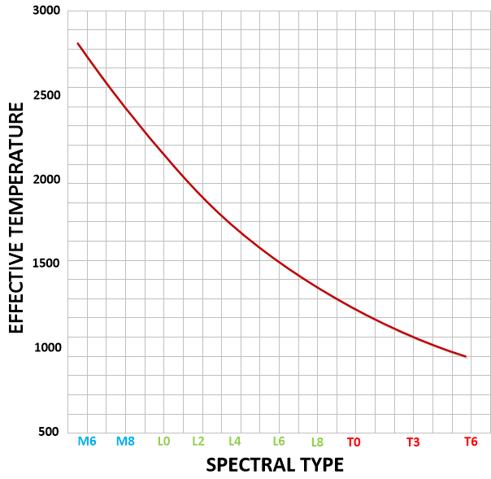
It can be easily observed on the graph that once the surface temperature of a star drops below 2500 that it is too cool to be called a red dwarf. At these temperatures any light that is emitted is primarily in the infrared range and is not at all observable by human eyes.
While artists and scientists like to state that these brown dwarfs would have a dim splotchy surface, the fact is that no one really knows what they look like as no human has ever seen one close up and personal.
However, what we do know is that at these temperatures and the known interior of the star would create a situation where there would be banding of sorts much like the planet Jupiter has bands, and this would include eddies and other plasma currents that might be visible on the surface. (Depending on the observed visual range of the observer.) Furthermore, there might be regions of more or less luminosity and that would manifest as some kind of “sun spots” or the like.
WISE 1405+5534
This is another brown dwarf. It is rated as a Y0V star. It is located around 23.5 light years away. It is considered to lie within the constellation Ursa Major.
It was discovered in 2011 from data collected by the Wide-field Infrared Survey Explorer (WISE). It was found at the infrared range in a wavelength of 40 cm (16 in). The announcement of this discovery resulted in two discovery papers: Kirkpatrick et al. (2011) and Cushing et al. (2011). However, basically they are the same authors and both papers were published simultaneously.
Paper number one; Kirkpatrick et al. presented discovery of 98 newly found brown dwarf systems. These were discovered by WISE and all consisted of system components of spectral types M, L, T and Y, among which also was WISE 1405+5534.
Paper number two; Cushing et al. presented discovery of seven brown dwarfs—one of T9.5 type, and six of Y-type. These were the first members of the Y spectral class, ever discovered and spectroscopically confirmed, including “archetypal member” of the Y spectral class WISE 1828+2650, and WISE 1405+5534. These seven objects are also the faintest seven of 98 brown dwarfs, presented in Kirkpatrick et al. (2011)
The object’s temperature estimate is 350 K (about 77 °C / 170 °F).
WISE 0350-5658
Here is another discovered brown dwarf. It is rated as a Y1V star. It is located around 12.1 light years away (+5.2 / -1.3). It is located in the constellation Reticulum.
Can life exist on a planet around a brown dwarf? Yes, most certainly. However, what would it be like? Indeed, what would it be like to live on an Earth-like planet around a brown dwarf? (For now, let’s assume the planet is located in the habitable zone when the system is at least a billion years old.) For a more conventional appraisal knowing what we know, that would put the orbital distance at about 0.005 AU. (That is pretty darn close.) Indeed, if Earth’s orbit was the same size, that would put us nearly (0.005 AU is not equal to, it is still a measurable distance) on the surface of the Sun!
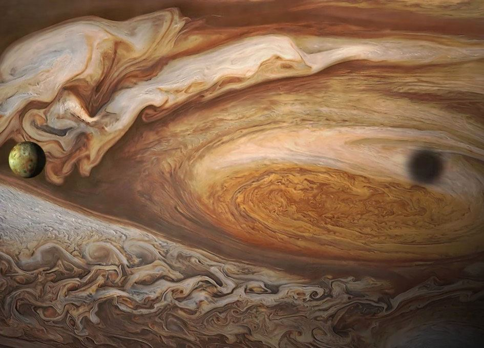
It is a ridiculously small orbit.
So what would be different? First of all, the brown dwarf would always appear in the same place in the sky, and it would be HUGE! Our Sun spans about half a degree in the sky. This planet’s orbit is 200 times closer than Earth’s to an object about one tenth the size of the Sun. That makes the brown dwarf appear about 20 times larger than the Sun (about 10 degrees across)! It is as big as a softball held at arm’s reach! It would appear much, much larger than our moon. to us. Not only that, but that “softball” is just hanging there in the sky all the time, never moving.
Eye Cones
Our Earth’s sky is blue because the atmosphere scatters blue light more strongly than red light (this is called Rayleigh scattering). However, a brown dwarf emits no blue light. (It barely emits any visible light at all! Its energy is mainly radiated at infrared wavelengths of light.) Thus, there is pretty much no scattering of the light from a brown dwarf. This means that, to our eyes, the atmosphere would be basically transparent.
Which, I am afraid, would make the daytime really odd to use humans. To a human person standing on the surface of the planet the star would be a very dim ruddy appearing reddish-brown orb in the sky. It would be gigantic, but if you just look to the side and you would be able to see the stars. It would basically look like nighttime except in the direction of the brown dwarf. Clouds would simply be black patches blocking the stars up above our heads.
When we look at the sun, we would be able to see all of the solar activity that occurs. We could see the whirls, and tides of the surface. We could see imperfections such as “spots” and “storms” in the top of the surface of the star. It would be an interesting situation and beautiful in a very eerie way.
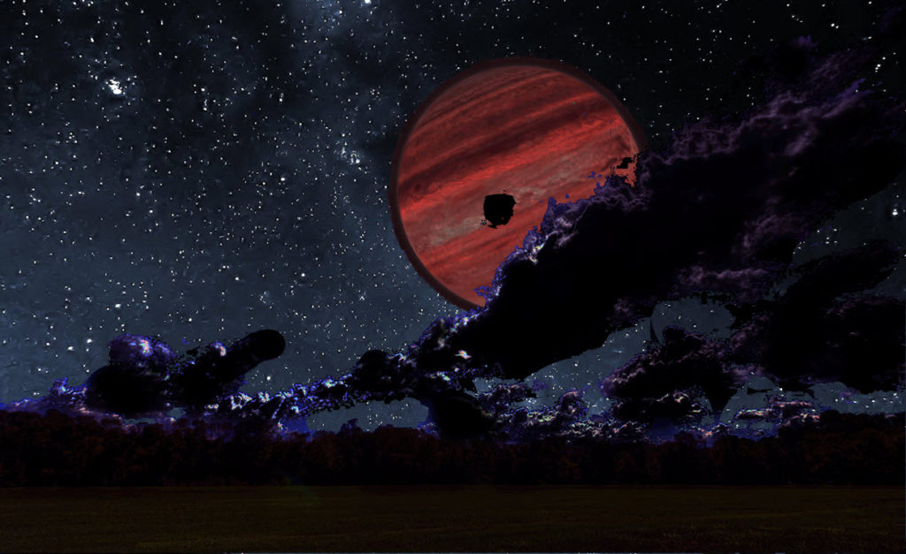
Of course, to a species that had developed eyesight that could see in the infrared range, the scene would be something else all together. To them, the day would bright and the sun would be blinding. They could still not see any Rayleigh scattering so they would be able to see the other stars that would exist in the sky.
It would be a most interesting and different point of view most certainly.
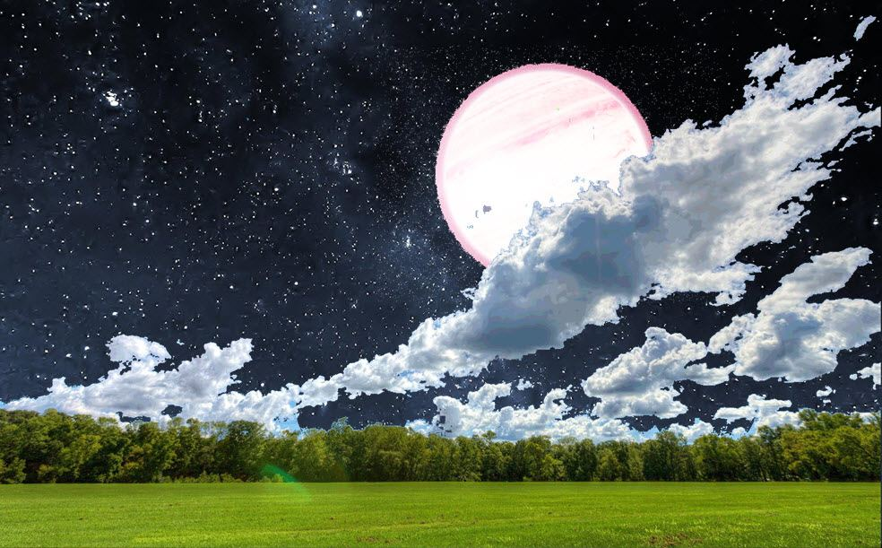
In fact, a species that could see in the infrared spectrum would see things quite different. The trees would be alive as they would emit IR light. The light from the brown dwarf would be bright and sunny. It would be a magical appearing place, not unlike the woods of the elves from the Lord of the Rings trilogy.
To a species that could see in the IR range, noon on a planet in orbit around a brown dwarf might look a little something like this…
We cannot guess on the eyesight of extraterrestrials. For instance the eyesight of dogs and cats are quite different from each other, as is the eyesight between humans and deer. Which is why, as you might already know, why hunting vests are orange.
I guess, that the point that I am trying to make is that other species can have a very beautiful way of looking at the world, and they don’t need to be able to perceive colors like we humans do. Depending on the eye cones, the views can be most impressive. Photographs taken using the IR range are hauntingly beautiful, depending on the eyes cones utilized.
WISE 0410+1502
This is a newly discovered brown dwarf. It is rated as a Y0V star. It is located around 13.7 light years away (+3.9 / -2.0).
WISE 0350-5658
WISE J035000.32-565830.2 (designation abbreviated to WISE 0350-5658) is a brown dwarf of spectral class Y1. It is located in constellation Reticulum. It was discovered in 2012 by J. Davy Kirkpatrick et al. from data, collected by Wide-field Infrared Survey Explorer (WISE) Earth-orbiting satellite.
Teegarden’s star (SO025300.5+165258)
Teegarden’s Star is an M-type brown dwarf in the constellation Aries, located about 12 light years from the Solar System. Despite its proximity to Earth it is a dim magnitude 15 and can only be seen through large telescopes.
Teegarden’s Star was originally identified as a red dwarf star but measurements made since its discovery make it more likely to be a brown dwarf star with a mass less than 0.08 that of the Sun. The inherent low temperatures of such objects explain why it was not discovered earlier, since it has an apparent magnitude of only 15.4 (and an absolute magnitude of 17.47). Like most red and brown dwarf stars it emits most of its energy in the infrared spectrum.
DEN 1048-3956
This star is a class M9 V brown dwarf about 13 light years from the Earth in the southern constellation of Antlia, among the closer interstellar objects to the Earth. This sub-stellar object is very dim with an apparent magnitude of about 17.
UGPS 0722-05
UGPS J072227.51-054031.2 (designation often abbreviated to UGPS 0722-05) is a brown dwarf of late T type, located approximately 4.1 parsecs (13 light-years) from Earth. UGPS 0722-05 was reclassified to T9, and was declared the T9 spectral standard in 2011.
The object is roughly the volume of Jupiter, but is estimated to have 5–40 Jupiter masses (MJ). This would make it less massive than ε Indi Ba. Since planets have a mass of less than about 13 Jupiter masses, it is possible that this is more like a planet than a dim drown dwarf.
Infrared spectra shows the object contains water vapor and methane and has a surface temperature of approximately 480–560 Kelvin.
WISE J1741+2553
Analysis suggests that this is a cool methane brown dwarf of T9 to T10 spectral type.It is dim and very dark. It is close. At only around 15.0 +3.9/-3.3 light-years way, WISE J1741+2553 is probably a galactic thin-disk object like our Sun, Sol.
Not much is known about this object. It was discovered after I was retired. I know nothing about it. You know, the name for the star and the associated system is pretty poor. It needs a better name.
WISE J0254+0223
WISE J0254+0223 appears to be a thick-disk object located some 17.9 +4.6/-3.6 light-years away. It is a cool methane brown dwarf of T9-10V spectral type. Both WISE J1741+2553 and WISE J0254+0223 are probably methane brown dwarfs that are even cooler than Gliese 229 b, which revolves around a red dwarf star. Although brown dwarfs lack sufficient mass (under 75-80 Jupiter-masses) to ignite core hydrogen fusion, the smallest true stars (red dwarfs) can have such cool atmospheric temperatures (below 4,000° K) that it is difficult to distinguish them from brown dwarfs. While Jupiter-class planets may be much less massive than brown dwarfs, they are about the same diameter and may contain many of the same atmospheric molecules.
This is a newly discovered brown dwarf star. It is rated as T8-10V. It is 16.0 light years away from our solar system (+3.3 / -2.0).
DENIS / DEN 0817-6155
This is a newly discovered brown dwarf star. It is rated as T6V. It is 16.0 light years away from our solar system (+/- 1).
DENIS J081730.0-615520 (also known as 2MASS 08173001-6155158) is a T brown dwarf about 5 pc (16 light years) away in the constellation Carina. It was discovered by Etienne Artigau and his colleagues in April 2010. The star belongs to the T6 spectral class implying a photosphere temperature of about 950 K. It has a mass of about 15 MJ (Jupiter masses) or about 1.5% the mass of the Sun.
DENIS J081730.0-615520 is the second nearest isolated T dwarf to the Sun (after UGPS J0722-05) and the fifth nearest (also after ε Indi Bab and SCR 1845-6357B) if one takes into account T dwarfs in multiple star systems. It is also the brightest T dwarf in the sky (in the J-band); it had been missed before due to its proximity to the galactic plane.
DENIS / DEN 0255-4700
DENIS 0255-4700 is an extremely faint brown dwarf approximately 16 light years from the Solar System in the southern constellation of Eridanus. It is the closest known isolated L brown dwarf, and only after the binary Luhman 16. It is also the faintest brown dwarf (with the absolute magnitude of M=24.44) having measured visible magnitude.
The photospheric temperature of DENIS 0255-4700 is estimated at about 1300 K. Its atmosphere in addition to hydrogen and helium contains water vapor, methane and possibly ammonia. The mass of DENIS 0255-4700 lies in the range from 25 to 65 Jupiter masses corresponding to the age range from 0.3 to 10 billion years.
WISE J163940.83-684738.6
This is a another discovered brown dwarf star. It’s luminosity rating has not yet been assigned at the time of this writing. It is 16.0 light years away from our solar system (+/- 2).
On September 27, 2012, astronomers using data from the Wide-field Infrared Survey Explorer (WISE), an infrared space telescope, revealed the discovery of a very cool, Y-class brown dwarf located only around 16 +/- 2 light-years of our Sun, Sol, among 13 such extremely dim and cool objects found in WISE data thus far. Designated WISE J163940.83-684738.6, the object’s estimated distance places it among the “lowest luminosity sources detected to date”. The object should be rich in surface methane as it was detected using “methane imaging techniques”, relying on near-infrared observations with methane filters.
WISE J052126.29+102528.4
This is a newly discovered brown dwarf star. It is rated as T7.5V. It is 16.0 light years away from our solar system (+5 / -4).
On July 10, 2013, a team of astronomers revealed their detection of a brown dwarf which may be located around 16 +5/-4 light-years from of our Sun, Sol. The cool and methane-rich, T7.5 dwarf has been designated WISE J052126.29+102528.4 (shortened to WISE J0521+1025). The object’s motion relative to the galactic core suggests that it belongs to the Milky Way’s thin disk.
LP 944-020
LP 944-020 is a dim brown dwarf of spectral class M9, located about 16 light-years distant from the Solar System in the constellation of Fornax. With a visual apparent magnitude of 18, it has one of the dimmest visual magnitudes listed on the RECONS page.
Observations published in 2007 showed that this object has an atmosphere high in lithium that also features dusty clouds.
WISE J200050.19+362950.1
On February 6, 2014, a team of astronomers submitted a preprint which revealed their detection of a brown dwarf which is roughly estimated to located between 13 to 26 light-years (3.9-8.0 pc) from of our Sun, Sol.
It was found using data from the Wide-field Infrared Survey Explorer (WISE), an infrared space telescope, the cool and methane-rich, T8 dwarf has been designated WISE J200050.19+362950.1 (which can be shorted to WISE J2000+3629). Lying near the galactic plane, the detection of J2000+3629 suggests that more such very dim brown dwarfs may await discovery.
DENIS 0255-4700
DENIS 0255-4700 is an extremely faint brown dwarf about 16 light years from the Solar System in the southern constellation of Eridanus. It is the closest known isolated L brown dwarf, and only after the binary Luhman 16. It is also the faintest brown dwarf (with the absolute magnitude of MV=24.44) having measured visible magnitude.
DENIS 0255-4700 was identified for the first time as a probable nearby object in 1999. Its proximity to the Solar System was established by the RECONS group in 2006 when its trigonometric parallax was measured. DENIS 0255-4700 has a relatively small tangential velocity of 27.0 ± 0.5 km/s.
The photospheric temperature of DENIS 0255-4700 is estimated at about 1300 K. Its atmosphere in addition to hydrogen and helium contains water vapor, methane and possibly ammonia. The mass of DENIS 0255-4700 lies in the range from 25 to 65 Jupiter masses corresponding to the age range from 0.3 to 10 billion years.
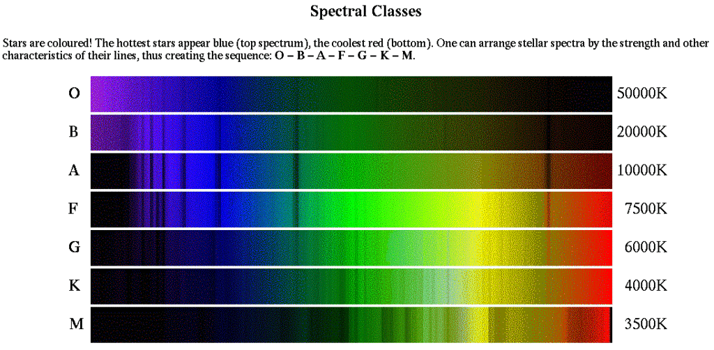
Speculation on Habitable Planets
The universe abounds in Red and brown dwarfs. Many of them are far too cool to host earth like life, but many do hold environments that are stable enough for non-terrestrial like life. If we were to visit one of these stars, it might be interesting to see what a habitable world would be like.
Firstly, the surface of a habitable planet orbiting a brown dwarf is always illuminated the same. So the climate would probably be very consistent. But this is not quite as simple as it seems; the planet is also spinning! To always keep the same face pointed toward the star the planet needs to spin once per orbit. And a planet in the habitable zone orbits its brown dwarf host in as little as 8 hours! On average it takes more like a day. So even though the planet is always facing its star, it spins at about the same rate as Earth! No one has modeled the climate of this kind of planet so we don’t know exactly what it would be like.
The entire globe could be habitable. With an atmosphere like Earth’s it would probably be cold on the night side and warm on the day side. But if the planet’s atmosphere were thicker than Earth’s, then the temperature would be relatively constant everywhere. Likewise, if the planet’s atmosphere is very thin then the difference in temperature between the day- and night sides would be much larger.
Of course, I am reminding the reader that life abounds in the universe under all kinds of different environments.
2MASS 1835+3259
This is a newly discovered brown dwarf star. It is classified as a M8.5V. It is 18.5 light years away from our solar system (+/- 0.05).
2MASS 0415-0935
This is a newly discovered brown dwarf star. It is classified as a T8V. It is 18.7 light years away from our solar system (+/- 0.3).
WISE 1741+2553
This is a newly discovered brown dwarf star. It is classified as a T9-10V. It is 18.9 light years away from our solar system (+3.6/-2.0).
LSR J1835+3259
LSR J1835+3259 is a nearby brown dwarf star of spectral class M8.5, located in constellation Lyra, the discovery of which was published in 2003. Trigonometric parallax of this object, measured in 2001–2002 with the USNO 61 inch (1.5 m) reflector under US Naval Observatory (USNO) parallax program, is 0.765 ± 0.0005 arcsec, corresponding to a distance of 5.67 ± 0.02 pc, or 18.48 ± 0.05 ly.
Aurora discovered
Auroras have been detected on the brown dwarf LSR J1835+3259. Using the Karl G. Jansky Very Large Array in New Mexico to scan radio wavelengths of light, along with the Hale Telescope on Palomar Mountain in California and the W. M. Keck Observatory in Hawaii to scan visible wavelengths of light, the researchers detected the telltale signs of auroras around this star.
The ground work for this discovery goes back to 2008. For in that year, Hallinan and his colleagues found that LSR J1835+3259 emitted radio waves in pulses.
"We knew that radio pulses from planets in our own solar system were caused by aurorae, so we thought maybe brown dwarfs had aurorae too," -Gregg Hallinan, an astronomer at the California Institute of Technology in Pasadena
These auroras might actually be rather spectacular.
"If you were to somehow stand on the brown dwarf's surface and survive — the surface gravity is maybe 100 times more intense than Earth's, and the temperature is several hundred to several thousand degrees — you'd see a beautiful bright-red aurora, The colors of auroras depend on whatever the atmosphere they take place in is made of. In Earth's case, it's mostly green and blue and red because of oxygen and nitrogen. When it comes to Jupiter, Saturn and brown dwarfs — which have hydrogen-rich atmospheres — you'd see red, and there would be ultraviolet and infrared wavelengths as well." -Gregg Hallinan, an astronomer at the California Institute of Technology in Pasadena
We, as humans have always known about auroras. Those whom live in the northern latitudes tend to see them light up the night sky quite often. It wasn’t until the 1990’s did scientists realize that aurora’s might form on other planets. Until this discovery, the brightest known auroras came from Jupiter, which has the most powerful magnetic field in the solar system. In comparison, these newly discovered auroras are more than 10,000 times, and could may be 100,000 times, brighter than Jupiter’s, This is simply because LSR J1835+3259 has a magnetic field perhaps 200 times stronger than Jupiter’s.
Of course, with every discovery comes questions. One such is pretty basic. What causes such a brown dwarf to possess such a feature? What is fueling the phenomenon? On Earth, auroras are driven by winds of electrically charged particles streaming from the sun, but this brown dwarf is far cooler and does not seem to be able to fabricate winds of charged particles. Nor does it have a stellar companion capable of doing it.
But there are a myriad of possibilities to this perplexing mystery. One possibility is that LSR J1835+3259’s auroras are driven by an Earth-size planet that generates strong currents in the brown dwarf’s magnetosphere as it swings through its magnetic field. Indeed, auroras on Jupiter are driven, in part, by its moon Io as it orbits in and out of the flux lines of Jupiter’s magnetic field.
There are other possibilities. Another is that electrically charged particles might rain down on the brown dwarf from above to drive the auroras. It remains uncertain where such particles might come from; a hidden companion, interstellar gas and dust, or matter venting from a nearby volcanic planet, or plasma originally spewed upward from the brown dwarf itself, there are many possibilities present.
This discovery has fueled further research. Hallinan and his colleagues at the California Institute of Technology in Pasadena have developed a new array of radio telescopes. One such is the Owens Valley Long Wavelength Array in California. It is dedicated to detecting auroras that lie outside of our solar system.
"We've already confirmed aurorae for a few more objects, Maybe 10% or higher of brown dwarfs may exhibit aurorae." -Gregg Hallinan, an astronomer at the California Institute of Technology in Pasadena
WISE 0359-5405
This is a newly discovered brown dwarf star. It is classified as a Y0V. It is 19.2 light years away from our solar system (+4.6/-2.0).
2MASS 0937+2931
This is a newly discovered brown dwarf star. It is classified as a T6V. It is 20.0 light years away from our solar system (+/- 0.5). 2MASS 0937+2931 has an unusual spectrum, indicating a metal-poor atmosphere and/or a high surface gravity (high pressure at the surface). Its effective temperature is estimated at about 800 Kelvin. The Research Consortium On Nearby Stars (RECONS) estimates the brown dwarf to be 0.03 solar masses.
WISE J2000+3629
WISE J2000+3629. This is a newly discovered brown dwarf. It is classified as T8V. It lies toward the constellation Cygnus. It is about 13 to 26 light years away from our solar system.
SIPS 1259-4336
This is a newly discovered brown dwarf star. It is rated at M8V. It lies approximately 25.8 light years away. At this stage, little is known about this star. It is possible that it is a flare star, but that has not been confirmed. All of us, I am sure, anxiously await further studies on this enigmatic object.
Conclusion
There are so many objects that are surrounding us in space. The objects that we have so far discovered are strange and unusual to us. Yet, we have only scratched the surface. There are many more out there.
Surrounding our solar system are objects. They include brown dwarfs, isolated planets, small asteroids, and huge bodies more resembling comets than anything else. We have not even begun to map out our local physical space.
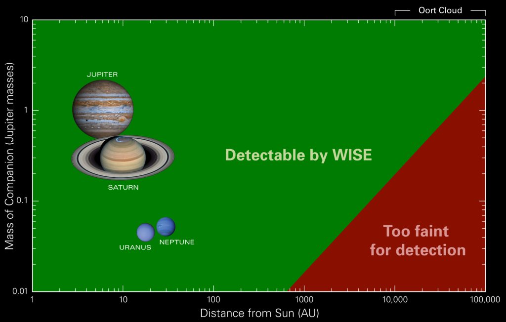
Rather than a big empty area of nothingness, the space that surrounds us is full of all sorts of objects.
These objects do not resemble the earth. They are alien. We, as humans, can not conceive of anyone living or native life evolving on these dark and cold objects. But that is just our ignorance speaking. In many ways, the environments found on planets that orbit the dwarfs (M, L, T, and Y) are ideally suited for a species that has evolved to see in the infrared band of the electromagnetic spectrum. Provided that there is a planet in the habitable zone of the brown dwarf, there is no reason to preclude a suitable habitat for evolution or colony.
Which leads to the most significant consideration in this exercise; our local physical space is more akin to a well-tended garden, park or orchard. It is well-traveled, mature and policed by the governing species for this region. Our inability to see things as they are, to understand things as they are, and to immediately reject things that are outside our realm of experience is a handicap that discolors our understandings.
We might be surprised to learn that a planet, located close to a small dwarf star, might be an ideal location for long-term evolution. The star would provide [1] stability, [2] offer planetary gravitational forces that would initiate tidal forces to jump-start evolution, and [3] serve to deflect occurrences of periodic mass extinctions due to meteoric bombardment.
To a species that evolved on a planet that orbited a dwarf, our sun and solar system would be too energetic. It would be too hot and the radiation too uncomfortable. The long term prospects for habitation would be less, as there wouldn’t be any deflective masses to prevent periodic mass extinctions. It would not be an ideal location to colonize.
Instead, it might be viewed as something else entirely. As such, any purposed intent of this planet; “our” earth, would be quite different from what we would expect.
We should stop thinking about “earth-like” habitation, and instead think of adaptability. Or more specifically, adaptability by a species that evolved upon a stable planet that orbited around a long-life dwarf. Only then, when we change our focus can we really better understand our place and our role in our galaxy.
Take Aways
- The space surrounding our solar system has many hidden objects.
- These objects have various properties.
- Some of the properties might lend themselves to provide ideal habitability conditions for a species so equipped.
- As such, it is reasonable to expect that a number of these “hidden” and undiscovered objects host a civilization or species, either naturally evolved or transported.
- The discovery of brown dwarfs has greatly expanded our knowledge of nearby space.
FAQ
Q: Do we know about the space that surrounds our solar system?
A: No. We are just now discovering the various aspects of it. The more we discover, the more that we realize we do not know. Over the years, we have made many assumptions about space and life. Many of which have to be revised. What we think is real is anything but.
Q: Can life exist on a plant around a brown dwarf?
A: Yes. Given the proper conditions, there is no reason to assume otherwise. In this universe, life springs up rapidly and readily.
Q: Can a civilization evolve around a brown dwarf?
A: Given the proper conditions, there is no reason why it shouldn’t. There are many long lived brown dwarfs, that if they held the necessary conditions, would have made fine crucibles for the development of life. Our earth is around 4 billion years old. Imagine the kind of civilization that might evolve around a brown dwarf that is 10 billion years old, as well as one that avoided periodic mass extinctions.
Q: What kind of life can we expect to evolve around a brown dwarf star?
A: Anything from a simple microorganism to an advance bipedal intelligent civilization and everything in between. There are no limits on how life can evolve and what form it can take on. One thing that we do know is that when civilizations evolve to a point where they start to explore space, they tend to re-engineer their physical bodies as necessary to propagate their species. There is no reason to assume that a space-faring specie that evolved around a brown dwarf might not re-engineer a physical body to exist in a more energetic environment.
Some Links
- Wikipedia on Brown Dwarfs
- Wikipedia list of Brown Dwarfs.
- Bibliotecapleyades entry on Brown Dwarfs.
- Brown Dwarf
- The Spectra of Stars (and Brown Dwarfs)
- Are there 100 Billion brown dwarfs hiding in the Milky Way?
- Extremely Enthralling Facts About Brown Dwarfs
MAJestic Related Posts – Training
These are posts and articles that revolve around how I was recruited for MAJestic and my training. Also discussed is the nature of secret programs. I really do not know why the organization was kept so secret. It really wasn’t because of any kind of military concern, and the technologies were way too involved for any kind of information transfer. The only conclusion that I can come to is that we were obligated to maintain secrecy at the behalf of our extraterrestrial benefactors.


MAJestic Related Posts – Our Universe
These particular posts are concerned about the universe that we are all part of. Being entangled as I was, and involved in the crazy things that I was, I was given some insight. This insight wasn’t anything super special. Rather it offered me perception along with advantage. Here, I try to impart some of that knowledge through discussion.
Enjoy.


MAJestic Related Posts – World-Line Travel
These posts are related to “reality slides”. Other more common terms are “world-line travel”, or the MWI. What people fail to grasp is that when a person has the ability to slide into a different reality (pass into a different world-line), they are able to “touch” Heaven to some extent. Here are posts that cover this topic.


John Titor Related Posts
Another person, collectively known by the identity of “John Titor” claimed to utilize world-line (MWI egress) travel to collect artifacts from the past. He is an interesting subject to discuss. Here we have multiple posts in this regard.
They are;